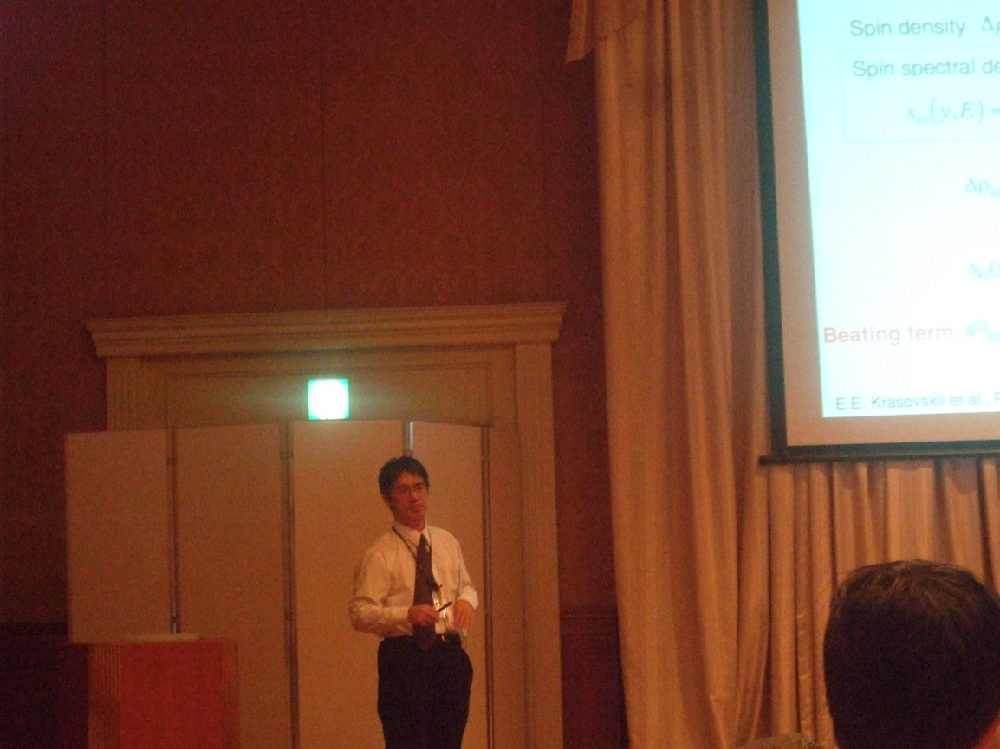
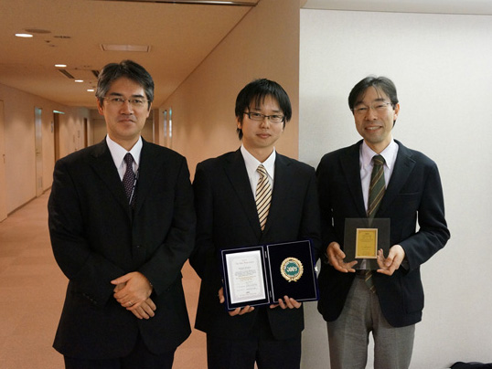

International Symposium on Surface Science (ISSS-6)

招待講演をする木村准教授
招待講演をする木村准教授

ポスター賞を受賞した宮原(中央)
ポスター賞を受賞した宮原(中央)
木村昭夫 准教授
招待講演
「Spin textures at strongly spin-orbit coupled surfaces」
「Spin textures at strongly spin-orbit coupled surfaces」
黒田健太
口頭発表
「Experimental verification of the Dirac electronic state in the ternary chalcogenide topological insulator PbBi2Te4 by low energy synchrotron radiation ARPES」
「Experimental verification of the Dirac electronic state in the ternary chalcogenide topological insulator PbBi2Te4 by low energy synchrotron radiation ARPES」
宮原寛和
ポスター発表
「Observation of the peculiar Rashba-type spin-splitting band on Bi(111) surface by high-resolution spin- and angle-resolved photoemission spectroscopy」
「Observation of the peculiar Rashba-type spin-splitting band on Bi(111) surface by high-resolution spin- and angle-resolved photoemission spectroscopy」